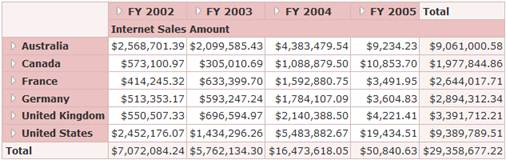

These styles can be applied to the OLAPGrid control using the AutoFormat property. The following code example illustrates how to apply the Almond style to the OLAPGrid control.
|
[ASPX] <%=Html.Syncfusion().Olap().OlapGrid("olapgrid",(OlapDataManager)ViewData["DataManager"]).AutoFormat(AutoFormat.Almond) %> |
|
[Razor] @(Html.Syncfusion().Olap().OlapGrid("olapgrid",(OlapDataManager)ViewData["DataManager"]).AutoFormat(AutoFormat.Almond).ToMvcHtmlString()) |

Figure 14: OLAPGrid Control Applied with Almond Style